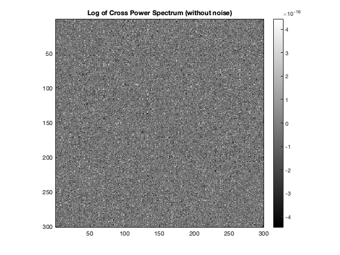
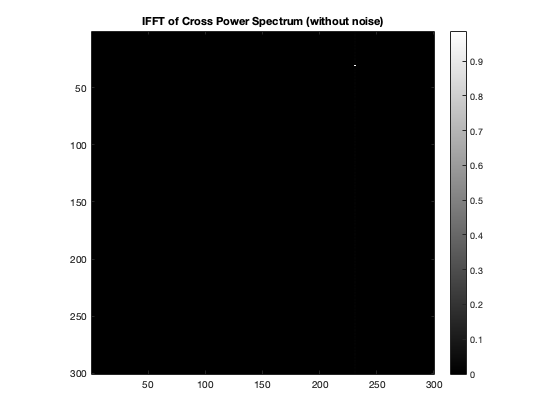
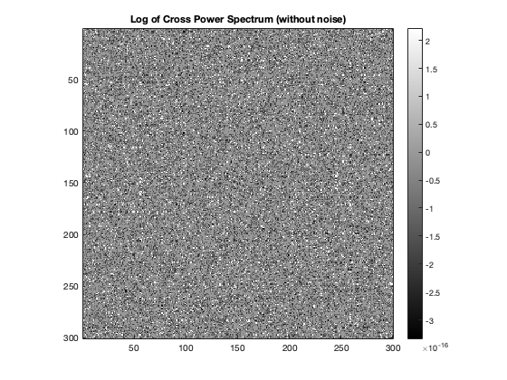
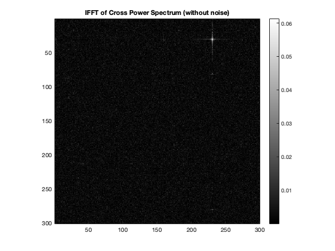

Contents
MyMainScript
tic;
Ground Truth Image Construction
orig_image = zeros(300,300); orig_image(50:100, 50:120) = 255; shifted_image = zeros(300,300); shifted_image(20:70, 120:190) = 255; % Since the translation is (-30,70), the prediction by the algorithm should % come (30, -70) or (30, 230). % Since indices start from 1, the peak should actually be at (31, 231)
Without Noise
[cps, peak] = transform_peak(orig_image, shifted_image); figure, imagesc(log(abs(cps))); colormap(gray(256)); colorbar, axis image, title('Log of Cross Power Spectrum (without noise)'); % The Inverse Fourier of the Cross Power Spectrum has a peak at only one % pixel which can be seen in the following image figure, imagesc(abs(peak)); colormap(gray(256)); colorbar, axis image, title('IFFT of Cross Power Spectrum (without noise)'); % The peak can be found using max operation peak = abs(peak); [row, col] = find(ismember(peak, max(peak(:)))); % The point with the peak is at disp([row, col]) % In this case, the peak comes out to be exactly at the desired point.
31 231 
With Noise
orig_image_noise = orig_image + randn(size(orig_image))*20; shifted_image_noise = shifted_image + randn(size(shifted_image))*20; [cps, peak] = transform_peak(orig_image_noise, shifted_image_noise); figure, imagesc(log(abs(cps))); colormap(gray(256)); colorbar, axis image, title('Log of Cross Power Spectrum (without noise)'); % The Inverse Fourier of the Cross Power Spectrum has a peak at only one % pixel which can be seen in the following image figure, imagesc(abs(peak)); colormap(gray(256)); colorbar, axis image, title('IFFT of Cross Power Spectrum (without noise)'); % The peak can be found using max operation peak = abs(peak); [row, col] = find(ismember(peak, max(peak(:)))); disp([row, col]) % In this case again, the peak comes out to be exactly at the desired point.
31 231 
Time Complexity:
The fast fourier transform for a N sized array takes O(Nlog(N)) time complexity. Since, we have an image of size NxN, hence, in this case, the time complexity of fast fourier transform will be O(N^2log(N)). Since, FFT is the slowest operation in the entire algorithm, hence the overall time complexity of the above algorithm is O(N^2log(N)). The pixel wise image comparison will take O(N^4) time. This will be done in following manner. If the shifted image is S, we make another image [S S] [S S] Since, S is a translation of original image (I), I must be present in this new matrix. Hence, this problem converts into substring matching problem. Finding the starting point of the original matrix in the above new matrix will give us the translation shift. This will take time = O(size of matrix 1 * size of matrix 2) = O(N^4)
toc;
Elapsed time is 2.366380 seconds.